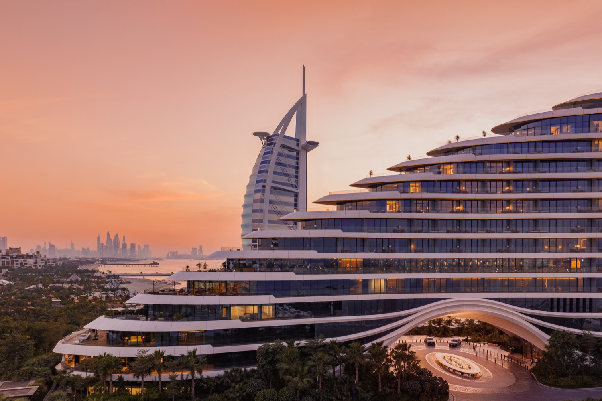
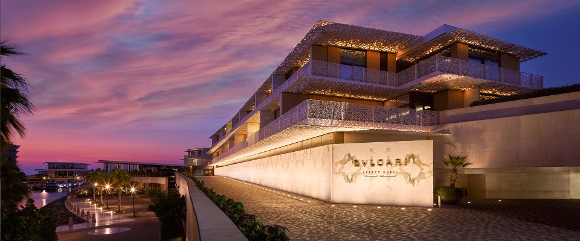
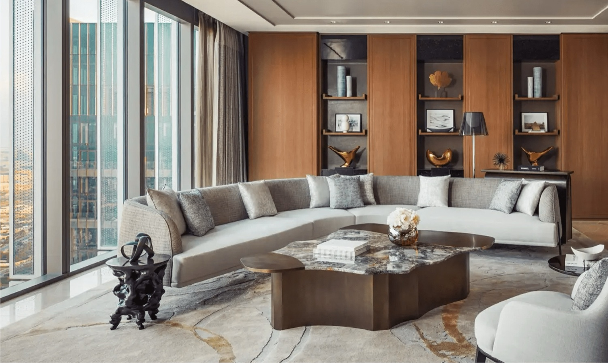

Destination Guide
Five elegant days in Dubai, with the right balance of glamour and ease.
Dubai is one of the easiest luxury cities in the world to get right, and one of the easiest to get wrong. Get it wrong and it is a checklist — tallest building, biggest mall, desert safari, home. Get it right and it is one of the most genuinely relaxing five days you can have anywhere, because almost nothing about it is difficult.
The whole trick is choosing the correct base and then refusing to over-schedule. Everything below assumes five nights, which is the number I would argue for. Four feels clipped. Seven is a different trip.
Choosing where to stay
This decision makes the trip. The rest is detail.
Dubai splits cleanly into city and beach, and the mistake people make is trying to have both from one hotel. You cannot. Pick the one that matches the trip you actually want.
Jumeirah Marsa Al Arab — the balanced answer

This is probably my personal favourite in Dubai right now. 303 rooms and 84 suites, a marina setting, and a dining lineup that runs from Mediterranean lunches to genuinely clubby evenings. It works for families and couples without feeling watered down for either, which is rarer here than it sounds. If you only want one recommendation, this is it. Full notes on the property.
Bulgari Resort Dubai — when you want it quiet

On its own island off Jumeirah, with 101 rooms, 20 villas, and a yacht club. This is the Dubai for people who do not really want Dubai — no spectacle, no crowds, Italian design and a marina. Best for couples, and for families who want space rather than activities. Full notes.
One&Only One Za'abeel — the city at full height

229 rooms, skyline in every direction, and a restaurant lineup — Tapasake, La Dame de Pic, Andaliman — that people fly in for without staying. This is the celebratory choice: birthdays, anniversaries, anyone who wants the city rather than the beach. Full notes.
Atlantis The Royal — when the hotel is the point
795 rooms, 44 of them with private infinity pools, and enough dining and pool clubs that you could genuinely not leave for four days. Too much for some people; exactly right for a milestone trip or a family that wants everything on site. Full notes.
How I would pace five days
Two real days out. Three that stay slow.
Day one is arrival and nothing else. Most flights land early morning or late evening, both of which wreck a first day if you schedule against them. Get to the hotel, eat somewhere on property, sleep.
Day two, do the city properly, once. Burj Khalifa early — genuinely early, before the haze — then the Dubai Fountain in the evening. Old Dubai and the creek if you care about the city having a history, and you should. That is the sightseeing done.
Day three does nothing. Pool, beach, spa, long lunch. This is the day people try to cut and the one they remember.
Day four is the contrast day. Desert or water, not both. A private desert setup at sunset is the better version of the safari everyone books. On the water, a half-day charter out past the Palm beats any organised tour.
Day five stays soft. Shopping if that is the trip, spa if it is not, a good lunch, and a late checkout worth arranging in advance.
Dining worth planning around
Dubai rewards booking ahead more than almost any city.
The restaurants people actually want are booked two to three weeks out in season, and the tables that matter — terrace, window, anything with a view — are not available to walk-ins at all. One serious dinner, one relaxed beachside lunch, and one evening that is more about atmosphere than food is the right rhythm for five nights.
Book before you fly. This is the single thing that most separates a good Dubai trip from a frustrating one, and it costs nothing but foresight.
When to go
The season is narrower than people think.
Late October through April. Outside that, being outdoors is genuinely unpleasant rather than merely warm, and the beach and terrace half of the hotel becomes theoretical. Late October and early November are the sweet spot — the season has started, rates have not yet reached their December peak, and the city is not full.
If you can only travel in summer, go somewhere else and save Dubai for the winter. It is worth waiting for.